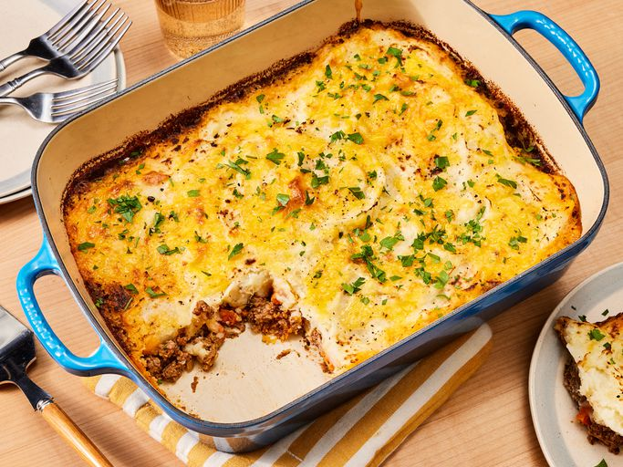

Home
Cottage Pie

Description
Cottage pie is an English casserole that’s traditionally made with ground beef, gravy, vegetables, and mashed
potatoes.
Ingredients
- 1 pound lean ground beef
- 1 onion, dice
- 3 carrots, diced
- 2 tablespoons all-purpose flour
- 1 tablespoon Italian seasoning
- 1/2 teaspoon ground cinnamon
- 2 tablespoons chopped fresh parsley
- 1 1/2 cups beef broth
- 1 tablesppon tomato paste
- salt and pepper
- 4 potatoes, peeled and diced
- 1 cup milk
- 1/4 cup butter
- 1/4 pound shredded cheddar cheese
Steps
- 1. Gather Ingredients
- 2. Heat a large skillet over medium-high heat. Cook and stir ground beef in the hot skillet until browned
and crumbly, 5 to 7 minutes. Add onion and carrot; cook and stir until onion has softened, about 5 minutes.
Mix in flour, Italian seasoning, and cinnamon. Stir in parsley.
- 3. Combine beef broth and tomato paste together in a jug; add to beef mixture. Season with salt and pepper;
lower heat and simmer for 15 minutes, stirring occasionally, until slightly thickened. Preheat the oven to
400 degrees F (200 degrees C).
- 4. Meanwhile, place diced potatoes in a medium saucepan; cover with water and place over high heat. Bring to
a boil and simmer until potatoes are tender, about 15 minutes; drain. Mash potatoes until smooth, then add
milk and butter; whip until fluffy. Season with salt and pepper.
- 5. Spoon ground beef mixture into a 9x13-inch baking dish; spread mashed potatoes on top and sprinkle with
grated Cheddar cheese.
- 6. Bake in preheated oven until top is browned and cheese is bubbly, about 25 minutes.
- 7. Serve and enjoy!